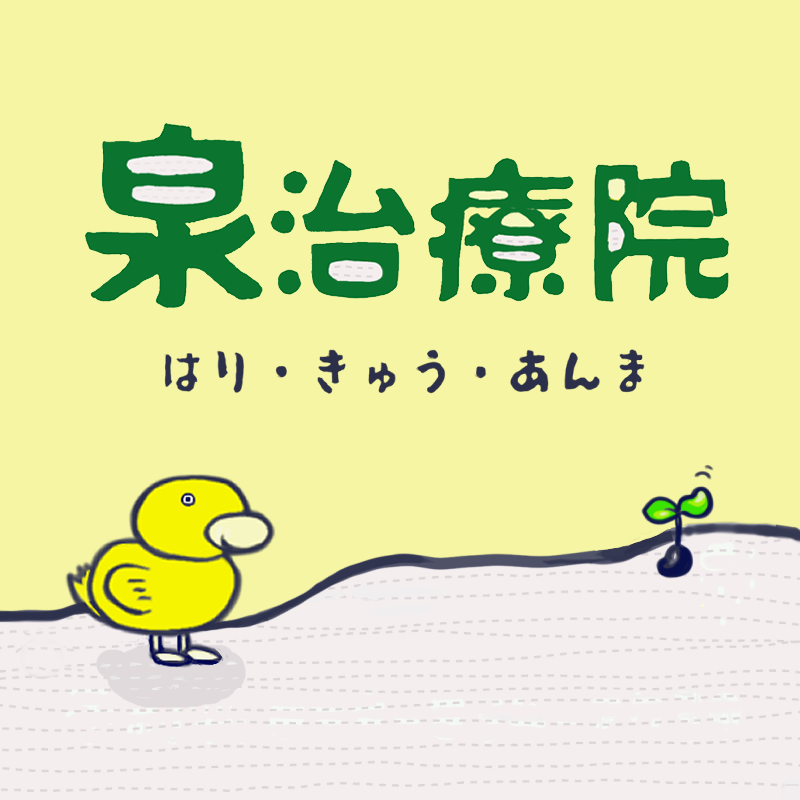

みなさん、こんにちは。 私の治療院のページを開いていただいて、ありがとうございます。 ところで、みなさんは、〈治療院〉と聞いて 一体、どのようなことを思い浮かべるでしょうか？ まず、頑固な腰や膝の痛みに悩まされている方が通う所‥‥‥ もちろん、その通りです。 しつこい肩凝りに我慢できなくなって、飛び込む所‥‥‥ 言うまでもなく、そうありたいです。 私たちは、来院された方々の苦しみを何とか少しでも取り除こうと 日々治療に励んでいます。 でも、みなさんの想像以上に もっと幅の広い治療活動を行っているのです。 例えば、頭痛やめまい、便秘や冷え性、むねやけや胃もたれ、不眠や不安など 手足首腰の痛み以外に、様々な訴えを抱いて通院されている方々もいらっしゃいます 。 東洋医学の目的は、一言で言えば、心と体のバランスの回復です。 何かとあわただしく、ストレスも多くなって来た沖縄の社会です。 ちょっとしたはずみで、心身のバランスを崩してしまい それが重なって、より重大な病気に至らないとも限りません。 普段より体が重い、ノボセがある、背中が張っている、食欲が湧かないといった 何気ない体調の変化を自覚された時は、どうか、思い切って、お早めに来院下さい。 慢性の病を抱えた方も、毎日の体調の安定に努めながら 腰をすえて、じっくりとバランスの回復を図って行きましょう。 すると、いつの間にか、重たい毎日を抜け出した 新しい、軽やかな自分と出会うことができるかもしれません。 治療院に通院されていると、段々と心と体の変化に敏感になって 知らず知らずのうちに、バランスを取ることが上手になって行きます。 ヨットが風に吹かれて、波に揺られて、目的地に向かうように 人生を航海して行けたらいいですね。 東洋医学は、モーターボートのような猛烈なスピードは出ませんが 常に、みなさんの目的に向かって、おだやかに吹いている風でありたいです。 その風に乗って、鳥のように羽ばたきましょう。 みなさん、東洋医学で健康を保ち 私たちと共に、〈バランスの達人〉を目指しましょう。